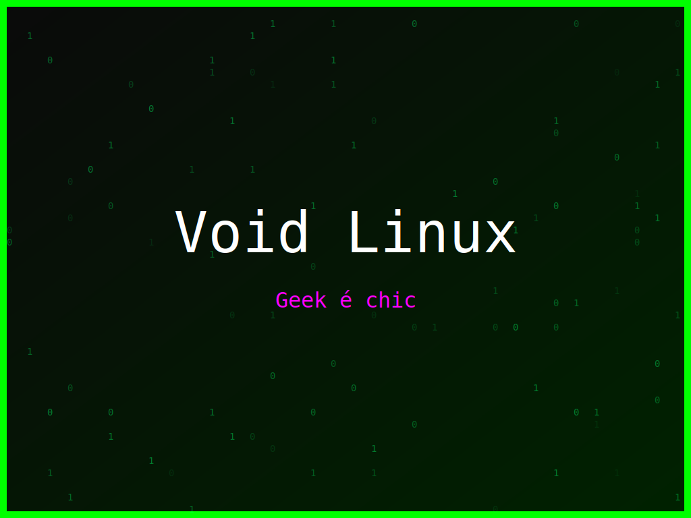

<section class="post-content">


    <div class="details-container">
        
        
        <ul class="details-list">
            <li><strong>Autor:</strong> piolinux</li>
            <li><strong>Descrição:</strong> Design para Void Linux que explora a estética do famoso erro 'Kernel panic'.</li>
            <li><strong>Distro:</strong> Void Linux</li>
            <li><strong>Frases:</strong> Geek Mode On, Geek é chic, Kernel panic</li>
            <li><strong>Tags:</strong> matrix, colorido</li>
        </ul>
        <a href="../galeria.html">Voltar para a galeria</a>||
        <a href="../wallpaper36.svg" download="wallpaper-void-linux-panico-kernel.svg">Baixar Wallpaper</a>
    </div>


</section>
